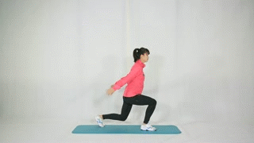

跑步腿部力量训练要点
腿部力量训练对跑者的重要性
腿是我们跑步时用到的频率最高的部位，双腿拥有我们身上最大的肌肉群。当跑者拥有良好的下肢力量训练会对于跑步有五大好处：
- 可以提高肌肉力量和耐力和稳定性
- 能对关节有好的保护作用、能预防伤痛
- 可以提高运动表现、提升成绩
- 从而帮助你保持正确跑姿
- 跑步更轻松、提高身体的代谢率
初级力量训练
| 动作名称 | 动作演示 | 训练要点 |
|---|---|---|
| 半蹲 |
• 蹲至大小腿约成90度，注意膝盖不要过度超过脚尖 • 挺胸收腹，感觉腿部和臀部用力 |
|
| 深蹲 |

|
• 相比半蹲，难度加大，蹲至大腿与地面平行 • 要求与半蹲基本相同 |
| 原地弓箭步 |
• 注意重心向下，膝盖不要过度超过脚尖 • 该动作与下蹲一样，是下肢经典训练动作 |
|
| 宽距下蹲 |
• 双脚距离较大，脚尖朝外，该动作可刺激到股内侧肌 • 可以起到平衡股外侧肌的作用，对于纠正髌骨运动轨迹异常 • 减少膝痛有一定帮助 |
|
| 仰卧挺髋 |
• 该动作是可以有效增强臀肌和大腿后群肌肉力量 • 这两个部位是跑步发力非常重要的原动肌 |
|
| 蹲跳 | • 该动作是提高下肢爆发力的经典训练动作 |
进阶专项力量训练
| 动作名称 | 动作演示 | 训练要点 |
|---|---|---|
| 弓箭步 |
• 左右腿交替向前迈出，除了锻炼下肢力量 • 同时对于平衡稳定也有一定要求 • 相比原地弓箭步难度增加 • 也更加结合跑步 |
|
| 单腿上台阶 | • 该动作可以有效提高下肢蹬伸力量及上摆腿力量 | |
| 保加尼亚剪蹲 |
• 将后腿放在台阶上，前腿做下蹲 • 对于稳定、力量均有一定要求 |
|
| 单腿硬拉 |
• 该动作主要训练臀部肌肉和大腿后群肌肉协调发力能力 • 在跑步过程中，后腿蹬地发力是推动身体前进最主要的动力 • 后腿蹬地实际上是臀肌发力伸髋和大腿后群肌肉发力折叠小腿的协同用力过程 • 这个动作就是训练臀肌和大腿后群肌肉协调用力能力 |
|
| 单腿仰卧挺髋 |
• 相比基础力量训练中的仰卧挺髋，单腿增加了难度 • 强化了核心控制，同时也符合跑步单腿蹬伸的技术特点 |
|
| 弓箭步跳 |  |
• 相比蹲跳，弓箭步跳是腿的运动方向与跑步更接近 • 是比蹲跳更专项的爆发力训练动作 |
高级专项力量训练
| 动作名称 | 动作演示 | 训练要点 |
|---|---|---|
| 弓箭步接抬腿 | • 非常典型的蹬伸接摆腿，与跑步动作一致 | |
| 单腿上台阶接高抬腿 |
• 同样需要一侧腿用力蹬伸上台阶 • 另一侧腿积极上摆，与跑步动作高度一致 |
|
| 俯卧高抬腿 | • 该动作主要训练抬腿能力，同时也强化了核心控制 | |
| 侧桥摆臂摆腿 |
• 该动作在侧桥位摆臂摆腿，动作模仿跑步 • 同时要求骨盆控制良好，是一项看似简单 • 实则较难控制的全身性训练动作 |
|
| 单腿硬拉接提膝 | • 相比单腿硬拉，加上提膝动作就更加结合跑步专项 | |
| 弓箭步向前跳起 |
• 训练支撑腿蹬伸和摆动腿上摆的爆发力 • 也是结合跑步的专项力量训练动作 |